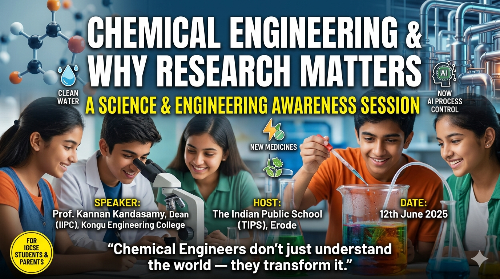

Chemical Engineering & Why Research Matters

Chemical Engineering & Why Research Matters — A Science & Engineering Awareness Session for IGCSE Students
Speaker: Prof. Kannan Kandasamy, Dean (IIPC), Department of Chemical Engineering, Kongu Engineering College
Host: The Indian Public School (TIPS), Erode · Audience: IGCSE Grades 10, 11 & 12 · Duration: ≈75 minutes
Research is not a mystery reserved for professors — and chemical engineering is not just about oil refineries. This session, delivered by Prof. Kannan Kandasamy to IGCSE students, answered one underlying question: why should a young person care about science, engineering and research? It moved from broad ideas to a concrete discipline, then to careers, live research frontiers, and a practical do-it-yourself roadmap for starting research while still at school.
Section 1: Science & Engineering — Two Sides of One Coin
The session opened by separating two words students often blur together: science asks WHY; engineering asks HOW. Science seeks to understand natural phenomena — observing, forming a hypothesis, testing it to build fundamental knowledge. Engineering takes that knowledge and applies it to solve real problems — designing, building and optimising useful products and systems.
The example used made this concrete:
- Science question: "Why does water boil at 100°C?" — understanding the underlying physical chemistry.
- Engineering question: "How do we purify water at scale?" — turning that understanding into a working plant that serves a city.
Students frequently think they must choose between "being a scientist" and "being an engineer." The takeaway: the two are complementary — a strong engineer keeps asking WHY, and a strong scientist cares how knowledge gets used. Chemical engineering deliberately sits across both.
Section 2: What Is Chemical Engineering?
The working definition given: "the art and science of transforming raw materials into useful products — safely, efficiently and sustainably — at an industrial scale."
Chemical engineering is the discipline that scales a chemical reaction from a test tube to a factory. Anyone can make a spoonful of a substance in a lab; doing it by the tonne, every day, safely and at a price people can afford, is the engineering challenge. Four foundations were presented as the pillars of the field:
| Pillar | What It Contributes |
|---|---|
| Chemistry | Chemical reactions, thermodynamics and kinetics — what happens and how fast. |
| Engineering | Process design, scale-up and optimisation — making it work reliably at scale. |
| Mathematics | Modelling, simulation and data analysis — predicting and controlling the process. |
| Sustainability | Green processes, safety and environmental protection — doing it responsibly. |
For an IGCSE student deciding subjects: chemical engineering rewards a combination of Chemistry, Physics and Maths — not Chemistry alone. The sustainability pillar is worth stressing — it is what makes the field feel current and purpose-driven to this generation of students.
Section 3: What Chemical Engineers Actually Do
To counter the assumption that the field is only about oil refineries, six very different sectors were presented:
| Sector | What the Chemical Engineer Does |
|---|---|
| Pharmaceuticals | Designs drug-manufacturing processes; guarantees safety and purity. |
| Petroleum & Energy | Refines crude oil; develops cleaner fuels and batteries. |
| Water Treatment | Purifies drinking water; treats industrial wastewater. |
| Food & Biotech | Scales up fermentation; develops sustainable foods. |
| Polymers & Materials | Engineers plastics, composites and nanomaterials. |
| Renewable Energy | Builds solar cells, hydrogen fuel systems and CO₂ capture. |
The session then showed a wall of familiar household products — Surf Excel, Dove, Rin, Vim, Lifebuoy, Pepsodent, Horlicks, Boost, Bru, Red Label, Vaseline, Lipton and more, under the Hindustan Unilever banner. The point: almost everything a student touched that morning — soap, shampoo, toothpaste, packaged food, the detergent on their uniform — exists because a chemical engineer designed how to make it consistently and affordably.
Use this as the "relevance hook" when re-telling the session. Ask the listener to name three products they used today — all three almost certainly passed through a chemical engineer's process design. FMCG (fast-moving consumer goods) is a large and under-appreciated employer of the discipline.
A "guess who" slide also revealed a shared chemical engineering thread across six well-known figures: Frances H. Arnold (Nobel Laureate in Chemistry, 2018), Xi Jinping (President of China), Mukesh Ambani (Chairman, Reliance Industries), Dolph Lundgren (actor and filmmaker with a master's in chemical engineering), Harsha Bhogle (cricket commentator), and Bharathi Baskar (Tamil orator). The lesson: the analytical, problem-solving training travels far — into science, business, public life, media and the arts. A reassuring message for any student worried that one degree locks them in.
Section 4: Why the World Needs Chemical Engineers Now
The session connected the discipline to four pressing global challenges, framing chemical engineers as essential to solving each one:
| The Challenge | How Chemical Engineering Responds |
|---|---|
| Around 2 billion people lack clean water | Membrane engineering and desalination. |
| Climate change is accelerating | Carbon capture and green hydrogen. |
| Drug-resistant bacteria are rising | Bioprocess engineering for next-generation antibiotics. |
| EV batteries are expensive and wasteful | Better electrode materials and cell design. |
Students increasingly choose careers by impact, not just salary. Frame chemical engineering as one of the few fields that sits directly on top of the water, energy, climate and health problems they read about in the news.
Section 5: Career Scope — India and Abroad
All salary figures below are illustrative ranges as presented in the session — actual pay varies by company, role, location and the candidate's profile.
India
| Headline Figure | Meaning |
|---|---|
| ₹8–25 lakh per annum | Indicative starting-salary range. |
| 3rd largest | India is the world's 3rd largest chemical producer. |
| 40,000+ jobs / year | New chemical-engineering jobs created annually. |
Key Indian industries hiring chemical engineers: Oil & Gas (ONGC, Reliance, HPCL, BPCL), Pharma (Sun Pharma, Cipla, Dr. Reddy's, Lupin), Petrochemicals (BASF India, Tata Chemicals, UPL), Water & Environment (VA Tech WABAG, Thermax), R&D labs (CSIR, IITs, DST-funded institutes), Government (PSUs, DRDO, BARC), and Academia (professor / researcher at IITs, NITs, IISc).
Abroad
| Region | Highlights |
|---|---|
| USA / Canada | ≈ $80K–$140K+ / year. Employers: ExxonMobil, Dow, 3M, Pfizer. Hot areas: semiconductors, biotech, energy storage. |
| UK / Europe | ≈ £45K–£90K / year. Strong pharma and chemicals. Players: Shell, BASF, AstraZeneca, BP. |
| Singapore / Middle East | ≈ SGD 60K–120K / AED 150K+. Oil & gas hub (Saudi Aramco, ADNOC); Singapore offers a world-class research ecosystem. |
| Australia | ≈ AUD 80K–120K / year. Mining, LNG, water treatment; strong permanent-residency pathway for engineers. |
Two messages for families: (1) the degree is globally portable — the same training is employable on four continents; and (2) the strongest long-term returns usually come from pairing the B.Tech / B.E. with a postgraduate qualification or specialisation. A master's or PhD abroad opens doors to MIT, Stanford, ETH Zürich and Imperial College London. Present salary numbers as ranges and always caveat them.
Section 6: Where the Research Is Happening
Six active research fields were presented at the frontier of the discipline:
| Field | Representative Work |
|---|---|
| Green Chemistry & Sustainability | CO₂ capture, bio-based materials, zero-waste processes. |
| Nanotechnology & Advanced Materials | Drug delivery, nanocomposites, 2D materials like graphene. |
| Pharmaceutical Engineering | Continuous manufacturing and process intensification in drug production. |
| Energy Systems & Storage | Batteries, hydrogen fuel cells, solar-thermal systems. |
| Membrane & Separation Science | Desalination, gas separation, water-purification membranes. |
| AI & Process Systems Engineering | Machine learning for process optimisation and smart factories. |
To make "research" tangible, a list of cutting-edge materials currently being developed was shared: Phase Change Materials (PCM) that store and release heat, Graphene — ultra-strong, ultra-thin conductor, Aerogels — extremely light insulating materials, Metal-Organic Frameworks (MOFs) for gas storage and capture, plus smart polymers, solar cells, carbon-fibre composites and shape-memory alloys.
A powerful framing connected it all — every wave of technology creates its own next problem, and that problem is the research opportunity for the next generation:
| Technology Developed | Problem It Created | Future Research Opportunity |
|---|---|---|
| Plastic manufacturing | Plastic pollution | Biodegradable plastics; advanced recycling |
| Fossil-fuel industries | Global warming / climate change | Carbon capture; green hydrogen |
| Chemical fertilisers | Soil degradation; water pollution | Smart fertilisers; sustainable agriculture |
| Electronic devices | E-waste | Urban mining; recyclable electronics |
| Industrialisation | Air pollution | Low-emission tech; clean energy |
| Antibiotics / pharma | Antibiotic resistance | New medicines; alternative therapies |
| Space exploration | Space debris | Satellite recycling; debris removal |
This "every solution creates the next problem" table is the single best slide to reproduce when explaining the session to someone. It shows students that the problems are not "finished" — their generation has a clear job to do, and research is how it gets done.
Section 7: Finding a Research Problem — and Why It's Worth It
Research problems are not hidden in distant laboratories; they are all around the student, in everyday life:
| Domain | Everyday Problems Worth Researching |
|---|---|
| Home | Self-cleaning tiles, heat-reflective roof paints, water purifiers, smart food packaging. |
| Transportation | EV batteries, hydrogen-powered buses, lightweight carbon-fibre bicycles. |
| Healthcare | Artificial organs, biodegradable sutures, smart bandages, wearable health sensors. |
| Agriculture | Soil-moisture sensors, biofertilisers, controlled-release fertilisers, biochar for soil fertility. |
| Environment | Carbon-capture materials, plastic-eating enzymes, biodegradable packaging, desalination membranes. |
Indian platforms that actively reward young innovators — accessible while still at school or in early college:
- Smart India Hackathon
- Atal Innovation Mission (AIM) and NITI Aayog initiatives
- India STEM Mission; Swachh Toycathon; robotics competitions (e.g. World Robot Olympiad)
- Buildathon-style innovation showcases and MyGov / Ministry-backed challenges
The thread connecting the everyday problems, the student platforms and India's national missions (Swachh Bharat, Jal Jeevan Mission, Green Hydrogen, Smart Cities) is the same: real, fundable, recognised work exists for those who learn to research. Point interested students toward Atal Innovation Mission / school Atal Tinkering Labs and the Smart India Hackathon as concrete first steps.
Section 8: How to Start Research — A Seven-Step Method
Research is a learnable skill, not a mystery reserved for professors. The speaker shared a seven-step method any student can follow:
| # | Step | What It Means |
|---|---|---|
| 1 | Identify a problem | Start with curiosity. What bothers you? What is unsolved? Read the news; talk to people. |
| 2 | Literature review | Search Google Scholar, Scopus and PubMed. Understand what is already known. |
| 3 | Form a hypothesis | Make an educated guess: "I think X will happen because Y." |
| 4 | Design experiments | Plan how to test it — choose variables, methods and controls. |
| 5 | Conduct & record | Run experiments carefully and record everything — failures teach the most. |
| 6 | Analyse & conclude | Use the data to support or reject the hypothesis; conclusions raise new questions. |
| 7 | Communicate results | Write it up; present at science fairs and conferences, or publish. |
This seven-step method is subject-agnostic — the same steps work for a biology, physics or social-science project. Keep it handy for any student starting a science-fair or EPQ-style investigation.
Section 9: At a Glance — By Grade
| Grade | The One Thing to Land |
|---|---|
| Grade 10 | Keep Physics, Chemistry and Maths strong and connected — they keep the engineering door open. Start a small science project to learn the research habit early. |
| Grade 11 | If chemical engineering appeals, confirm the PCM subject combination and begin building a profile — Olympiads, a hackathon, basic Python, one investigation taken seriously. |
| Grade 12 | Map the route concretely — entrance exams (JEE / university-specific), strong PCM scores, and a shortlist of Indian and overseas options. Begin thinking about whether a postgraduate qualification fits the plan. |
Typical Pathway After School
- Class 12 with PCM (75%+ recommended)
- JEE Main / Advanced → IIT / NIT / BITS, or direct admission to a strong private university
- B.Tech / B.E. in Chemical Engineering (4 years)
- Internships, research projects and GATE preparation
- Then: M.Tech / MBA / MS abroad / PhD / industry job
"Chemical engineers don't just understand the world — they transform it."
Three Questions for Your Next Student Session
- When a student picks Chemistry as a subject, have I explored whether they know chemical engineering exists as a distinct degree — and what it actually involves?
- Have I used the "everyday products" frame to make the field feel real and relevant, rather than abstract?
- Does the student know that research is a learnable, step-by-step skill — and that they can start today, from school?
Speaker contact (shared for genuine follow-up): Prof. Kannan Kandasamy — ykannankongu@gmail.com · LinkedIn: kannan-kandasamy